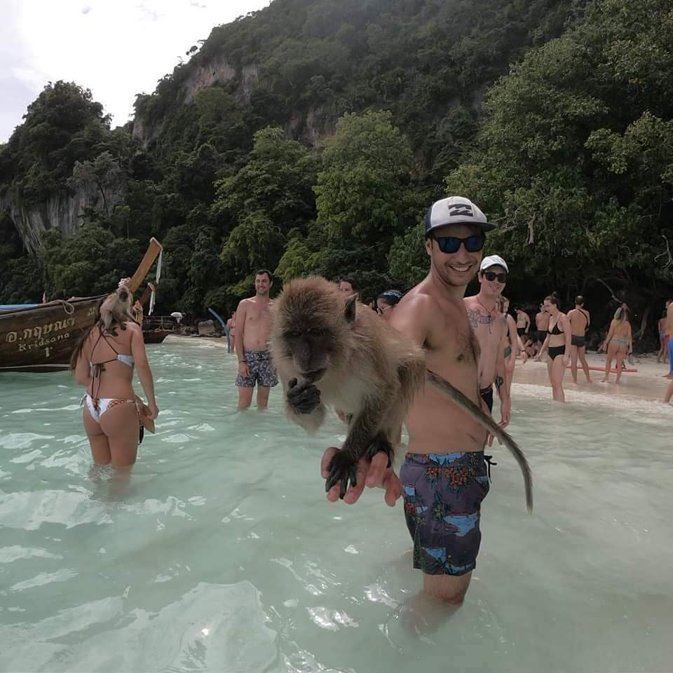

entrevista-a-uru
Charlando con Uru
como te llamas?
Mi nombre es joaquin
¿Que edad tenes? y ¿a que te dedicas?
tengo 33 años y soy
docente, ademas me gusta mucho viajar
¿ Preferis playa o montaña?
Creo que con el tiempo adecuado un poco de ambas si se puede, unos dias en la montaña a puro trekking y luego relajar en la playa
¿Podrias darnos alguna info mas acerca de vos?
- Naci en Lezama
- Provincia de Buenos Aires
- me gusta el mundo de la programacion
- alguno de mis hobbies son:
- ir a festivales de musica, indie rock, soul, jazz
- jugar al padel con amigos o disputar torneos
- viajar y conocer nuevos lugares, sea una escapada de un finde o un viaje largo
